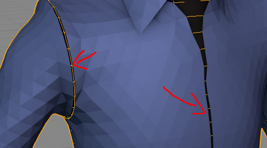

Which license should I buy?#
Business license - use when you have company and above 100k $ income. Else use license for Individuals
My cloth goes through character body#
Make sure you enabled cloth collision on both garment mesh and character body:
- Garment collision: Physics tab -> Cloth properties -> Collision tab)
- Character body: Physics tab -> Collision
Collision settings that are good if you character has proper dimensions (is around 2 meters high)
My cloth is falling on floor too fast#
Is is because gravity is pulling cloth too strong. See: 'Initialize Simulation' button
There are ugly gaps between sewing patterns#
Blenders cloth 'Self collisions' may cause that. Try reducing cloth 'Self Collisions' DISTANCE parameter, or disable it completely, if you do not need it.
This should be no longer issue, fixed in blender 2.83. If you want to get rid of gaps completely use Finalize Cloth
 There is visible gap visible here, caused by cloth Self Collisions**